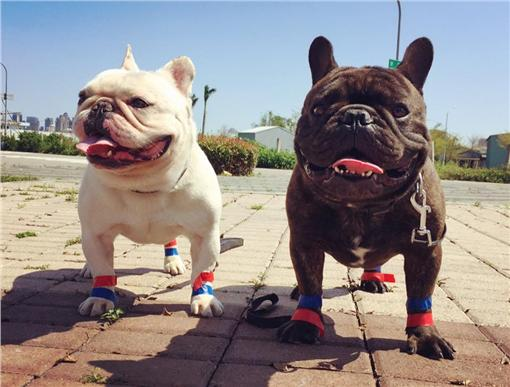

法國鬥牛犬
外表
耳朵呈蝙蝠耳形狀，處在頭頂最高位置，兩隻耳朵不是很靠近，兩耳是平坦的，但前額部分不是平的，有少許弧度；口鼻兩頰輪廓明顯，肌肉發達，形成柔軟的、深的皺紋，在兩眼間形成凹陷，法斗的鼻子很短很寬闊，鼻子顏色都是黑色，上嘴唇厚實、款發懸垂且深，完全蓋住下顎兩邊，和下唇在前方密合，看不到牙齒露出；尾巴螺旋狀，尾根粗、尾尖細；毛色有多種顏色
性格
與其他伴侶犬一樣，法國鬥牛犬需要人類的陪伴。主人最好不要將法國鬥牛犬單獨留下超過幾個小時，因為這種狗如果長時間獨處，會出現分離焦慮。法國鬥牛犬的運動需求量相當小，但也需要每天短距離的散步。他們性格平靜，很少大聲吠叫（一般只會在提醒主人注意時吠叫），很受婦女和兒童的喜愛，也成為了公寓住民養狗的最佳選擇。
歷史
法國鬥牛犬的血統可以被追溯到英國獒犬。在1800年代，在英國，利用英國獒犬培育出小型的玩具鬥牛犬（Toy Bulldog）。在工業革命後，原居諾丁漢的英國蕾絲工人移居到法國諾曼底，將這種小型狗帶往法國。
飼養注意事項
因先天遺傳，髖關節容易出現問題，需避免爬山、上下樓梯等運動
非常容易中暑，多注意氣溫及環境通風，並隨時提供充足水分
最寬但氣管狹窄，平時呼吸聲大、睡覺會打呼
皮脂分泌旺盛，容易罹患皮膚病
